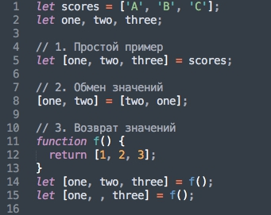

Занятие #24

В ES2015 вместо var введены новые переменные let и сonst - константа
Отличия let:
Деструктуризация подразумевает разбивку сложной структуры на простые части, в JS это массивы и объекты.
Для массивов:

Для объектов:
Реализовать два произвольных метода деструктуризации для массива и объекта.
Классы в JavaScript представляют собой синтаксический сахар над существующим в JavaScript механизмом прототипного наследования.
1. Объявление класса
Также есть class expression
2. Oбъявление класса не совершает подъём (hoisted)
3. Статические методы
4. Наследование классов с помощью extends
5. Обращение к родительскому классу с помощью super
Создать класс Человек и подкласс Студент. Использовать extends и super.
Объект является итератором, если он умеет обращаться к элементам коллекции по одному за раз, при этом отслеживая свое текущее положение внутри этой последовательности.
Генераторы — это функции которые можно запустить, приостановить и возобновить на различных стадиях выполнения. По сути дела, эта специальная функция возвращает итератор.
Создать счетчик с помощью генератора.